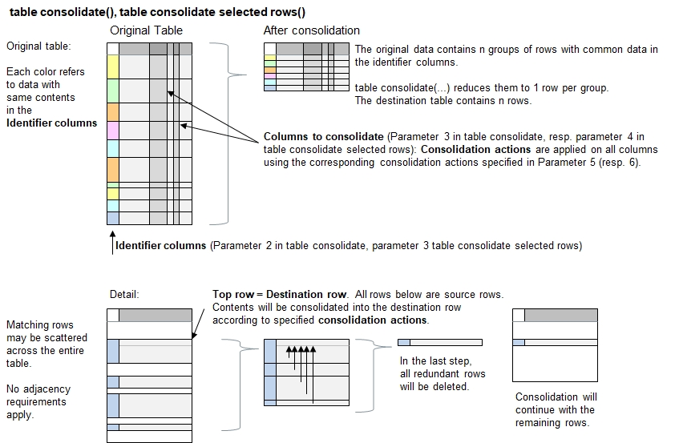

Function Names
table consolidate, table consolidate selected rowsDescription
This function condenses the the table by reducing the rows and performing operations in order to aggregate the data so they continue to be
plausible for further use. More precisely, one or more identifier columns need to be defined. The aim is to reduce the number of rows with
the same data in the identifier columns to 1. The 2nd and further rows with the same identifier data will be merged into the first applciable
row. Specific consolidation actions will be applied on selected columns (e.g. overwriting, adding up, etc.).

Hint:A vertical-to-horizontal pivot operation can be finalized by using this funciton after calling table spread() or table spread given headers().
Call as: procedure
Restrictions
Indirect parameter passing is disabled
Parameter count
1-6
Parameters
| No. | Type | Description |
|---|---|---|
| 1. input |
literal | Name of existing table |
| 2. code |
expression :literal |
Expression to select rows Applicable to function table consolidate selected rows only.
Specify the conditions or rules to select the rows. See expressions to select rows. |
| Opt. 2. / 3. input |
table columns | Identifier Columns The identifier columns guide the consolidation process. All rows containing the same data in the identifier columns will be reduced to 1 row accordingly.
If the 1st function parameter refers to no columns, then all rows in the entire table will be consolidated to 1 row. If table consolidate is called
with onyly 1 function parameter, then the consolidation process takes place without consolidating the remaining columns (i.e. consolidation action 'none' is assumed).
|
| Opt. 3. / 4. input |
table columns | Columns to consolidate Specify the columns where the data shall be consolidated automatically. The remaining columns in the table will not be consolidated, i.e. the consolidation
action is assumed 'none'. In this case, the contents in the first row will be preserved.
|
| Opt. 4. / 5. input |
parameter set or literal | Consolidation actions Specify one of the various consolidation actions.
|
| Opt. 5. / 6. input |
parameter set or literal | Separator string For some consolidation actions (e.g. append, append once), a separator string can be specified to separate the consolidated strings in a more visible way, for example using a comma or new line. Default value: '' (empty string) |
Return value
| Type | Description |
|---|---|
| numeral | Number of rows removed >=0 = Number of rows removed |
Examples
table initialize( t,
{ { Highest Score, Name, Location, Game 1, Game 2, Remarks, Count },
{ 210, Taylor, Rome, 32, 20 },
{ 190, Tailor, Prague, 41, 13, Exceptional win },
{ 190, Snyder, Berne, 41, 12, },
{ 200, Tailor, Miami, 51, 10, great job },
{ 230, Taylor, Jakarta, 14, 21 },
{ 230, Taylor, Boston, 15, 22 },
{ 190, Tailor, Oslo, 41, 13 great job } } );
table copy table( t, u );
// '*' in 3rd function parameter selects all columns except 'Name'.
// In this case, the 6 consolidation actions apply to the 6 columns from left to right.
c[] = table consolidate ( t, Name,'*', {max, append, sum, average, append once, count}, ", " );
echo("All rows consolidated (", c[], " rows removed):");
table list ( t );
c[] = table consolidate selected rows( u, [Name]==Taylor, Name,'*', {max, append, sum, average, append once, count}, ", " );
echo("Only Taylor's rows consolidated (", c[], " rows removed):");
table list ( u );
Output
All rows consolidated (4 rows removed):
0 : Highest Score | Name | Location | Game 1 | Game 2 | Remarks | Count
1 : 230 | Taylor | Rome, Jakarta, Boston | 61 | 21 | | 3
2 : 200 | Tailor | Prague, Miami, Oslo | 133 | 12 | Exceptional win, great job | 3
3 : 190 | Snyder | Berne | 41 | 12 | | 1
Only Taylor's rows consolidated (2 rows removed):
0 : Highest Score | Name | Location | Game 1 | Game 2 | Remarks | Count
1 : 230 | Taylor | Rome, Jakarta, Boston | 61 | 21 | | 3
2 : 190 | Tailor | Prague | 41 | 13 | Exceptional win |
3 : 190 | Snyder | Berne | 41 | 12 | |
4 : 200 | Tailor | Miami | 51 | 10 | great job |
5 : 190 | Tailor | Oslo | 41 | 13 great job | |